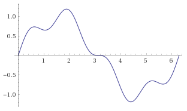

34. The Vipassana Jhanas#
The vipassana jhanas are a way of describing the stages of insight that is a bit broader than the map that breaks the stages down into sixteen ñanas. They are two descriptions of the same territory, and both have their uses. The vipassana jhanas differ from the shamatha jhanas in that they include the perception of the three characteristics, rather than the “pure” shamatha jhanas, which require ignoring the three characteristics to get the meditation object to appear stably and vividly. However, the two may share many qualities, including very similar breadths of attention and other aspects.
There are seven vipassana jhanas, the first four that are formed, and the last three that are formless. The reason there are not eight is that the eighth vipassana jhana (neither perception nor non-perception) cannot be easily investigated, as it is generally too subtle to clearly reveal the three characteristics. Thus, calling it a vipassana jhana is a bit problematic. However, it is part of the standard pattern of progress, so is worth remembering, and helps explain some of the material found in the old texts. Further, we can rapidly oscillate between the seventh and eighth jhanas in a way that is oddly vipassana-esque, and this is common enough in strong practitioners, though, being a very subtle business, many may not notice they are doing this unless directed to really look for it or unless they have exceptional analytical skills. Concentration skills and analytical skills, while sometimes related, are not the same thing.
Remember how I mentioned earlier that the original Pali texts used the same four or eight jhanas to delineate the concentration states and the insight stages? Remember how I said that the delineation of the stages of insight didn’t occur historically until a bit later, starting with the Abhidhamma, which was probably compiled about one to two centuries after the Buddha’s death, and then expanded in the commentaries? In the second half of the twentieth century, considerable deep, practical, experiential work was done to try to resolve these maps. As with most terminological issues in the spiritual life, there is significant disagreement about just how the jhanas and the stages of insight line up, and I will touch on these in this chapter.
The practical application of delineating the vipassana jhanas is that the traps that awaited us in the shamatha jhanas can arise during the progress of insight, so being able to apply the body of advice that addresses these occurrences can be very helpful. For instance, we may be going along in the progress of insight but get stuck when we stop investigating rapture, which is a part of the early jhanas and of some of the early insight stages. Thus, realizing that there are some relationships between the shamatha and vipassana jhanas can keep us on the lookout for aspects of our experience that we may be missing or artificially solidifying, this latter being so tempting to do, particularly with pleasurable meditative states. If we have some mastery of a set of insight stages, we can use these stages to learn to get into shamatha jhanas by concentrating on solidifying their predominant positive qualities, what I call “horizontal work”, since you can learn to stay at the same basic general jhanic level and shift from a more vibratory take on it to a smoother take.
There are those who say that the jhanas and stages of insight do not line up at all, but this is too rigid theoretically, often not in accord with direct experience on the cushion (or in some other posture), and doesn’t help resolve the problems apparent in the original texts of the Pali canon. For those who are still diehard traditionalists and believe that the jhana terminology only applies to pure concentration practices, I offer the following quote from the Buddha that is found in one of my favorite suttas, #111, One by One as They Occurred, in The Middle Length Discourses of the Buddha, as translated by Bhikkhu Ñanamoli and Bhikkhu Bodhi.
“And the states in the first jhana—the applied thought, the sustained thought, the rapture, the pleasure, and the unification of mind; the contact, feeling, perception, volition, and mind; the zeal, decision, energy, mindfulness, equanimity and attention—these states were defined by him one by one as they occurred; known to him they arose, known to him they were present, known to him they disappeared. He understood thus: ‘So indeed, these states, not having been, come into being; having been, they vanish.’”
Those with fixed views can squirm and pontificate any way they like, but this guy is clearly maintaining an extremely fast, consistent, and precise investigation of impermanence and is thus clearly doing insight practices. I am aware of the argument that this text, while in the Pali canon, might not be as old as some of the other texts in the Pali canon, but I couldn’t give a rat’s ass, as it works, points to awesome practice and, by following this type of practice well, amazing insights reproducibly arise. Again, I am a pragmatist, and I will take my efficacious dharma where I can get it, and that sutta is one of the very best when it comes to teachings you can apply that work.
To digress for just a moment, the guy the Buddha is talking about here is none other than my hero, Sariputta. The Buddha says that Sariputta goes on to do very precise and powerful insight practices high up into the formless realms and attains to very liberating insights. I often hear Nouveau Tibetan Buddhists, often egged on by some of what is found in various non-Theravada texts, making comments that clearly indicate that they feel themselves to be qualified to denigrate his practice and don’t seem to notice how ironic this is, as they are almost always those whose own spiritual progress doesn’t qualify them to lick the muddy sandals of someone with a fraction of Sariputta’s realizations. When even one in a thousand of the meditators I meet who make these absurd and insulting statements about Sariputta can do what he could do or understand what he understood, I’ll eat this book.
Back to business. All of this map stuff is only helpful if it keeps you practicing clearly and in a way that brings results. I will discuss more of the pros and cons of maps soon enough.
Bill Hamilton’s Model#
The vipassana jhana model I like the most is that used by the late, great Bill Hamilton. It is the one that aligns best with my own experience and investigations, and I don’t think that is just scripting or rationalization. Bill was a mighty meditator, though he was often underappreciated in his own time and community. True, he was a quirky old bat on a good day, but he also died a tremendously seasoned scholar and self-proclaimed arahant who had complete mastery of the formless realms. There was nothing particularly spectacular about Bill’s life other than his understanding of it, and he died in poverty and obscurity in basic denial of the severity of his pancreatic cancer. Profound meditative abilities and rare insight into the three characteristics didn’t give him insight into his medical condition. I think we are almost all in denial of the stark fact of our mortality to some degree. He thought he had the time to write down many of the technical points of insight stage theory that I present here, but he didn’t, so I have done my best to pass on what I have understood of what he taught me. I have never met anyone who had given the question of the vipassana jhanas more consideration, and his fascination with complex models was remarkable. A quick digression here about Bill, as I did dedicate this book to his memory …
Bill Hamilton was not only a meditation master, he was also a rogue teacher and basically felt like an outcast from the modern international vipassana community, despite occasionally being a part of it by writing Saints & Psychopaths (highly recommended) and founding the Dharma Seed Tape Library, which would later become dharmaseed.org. Bill was too smart, too uncompromising, too learned, too dedicated to undiluted dharma and absolute mastery to be a popular mainstream teacher. He didn’t teach to make people feel good about themselves or win friends. His obscurity was a tragic loss for the many people who didn’t know about him. However, for the few of us who knew him and were willing to accept the fact that he was an eccentric, wary, sensitive, quirky, idiosyncratic, sometimes naive, yet sometimes paranoid dude, Bill Hamilton was just what we were looking for.
Bill seemed to live for the sole purpose of sharing his experience of dharma rather than for flying around the world making money or being popular. Unlike the few other Western dharma teachers with his level of mastery, you could call Bill on the phone and talk for hours about this stuff, and then you could do it again. His very unpopularity made him a true and accessible teacher. The other remarkable things about Bill were that he would talk about actual mastery, though you had to drag it out of him. He had high standards that I found quite refreshing.
Bill also taught in an unusual way. His style was basically to seem extremely skeptical that any of your descriptions of any experiences could really have anything to do with the attainment of anything. I personally found this quite irritating, but it had the positive effect of making his students question deeply whether they were really experiencing what they thought or claimed they were and to look more deeply at the truth of each moment. It also served as a helpful counterbalance to his interest in models and specifically named levels of attainment. Part of my fantasy is that a bit of his edge, uncompromising attitude, and deep understanding may have come through in this work, though let me be clear that Bill never let on that he was particularly impressed with anything I ever described in my own practice. I talk more about my relationship with Bill later.
Bill also provided a solution to the endless problem of those who would war over the term “jhana” and what it means to be in jhana. For Bill, it wasn’t that some low-level quiet and blissful state was jhana, or that something lasting twenty-four hours where your body is gone and all that pervades is clear light was jhana, but that all of that was some flavor of jhana, and it needed more qualifiers to really explain and describe it. So, in Bill’s very thorough, nuanced, progressive, and intricate way of thinking, lots of things could be jhana, and nearly any meditative state could be explained in terms of something to do with jhanas.
My appreciation of hard jhanas, soft jhanas, vibratory jhanas, stable jhanas, very deep jhanas, formless aspects showing up in earlier jhanas, kasina-based jhanas, jhanas that fuse various jhanic qualities in unusual combinations, the subparts and sub-subparts of the development of each jhana, and how the same jhana can appear superficially very different when it was arrived at with a different object as the focus of that jhana, come from practice based on Bill’s vast and sophisticated way of thinking about jhanas. For this and many other excellent teachings, he inspired deep respect and gratitude.
Back to discussing Bill’s vipassana jhana model. The table below explains which ñanas fall into which vipassana jhanas, and is a rearrangement of the table in the beginning of the chapter on the progress of insight:
Vipassana Jhana |
Ñanas |
|---|---|
First (vj1) |
1 to 3: Mind and Body, Cause and Effect, Three Characteristics |
Second (vj2) |
4: The Arising and Passing Away |
Third (vj3) |
5 to 10: The Dark Night |
Fourth (through seventh/eighth) (vj4-vj7, j8) |
11 to 14: Equanimity, Conformity, Change of Lineage, Path |
Thus, when in each of those ñanas, we can learn something from its jhana aspect, and when in each of the jhanas we can notice what insight territory is available there. Further, as the division between shamatha and vipassana is not nearly as straightforward as some make it out to be, there typically is a lot of natural movement back and forth that can occur between vipassana jhanas and shamatha jhanas even when trying to keep to just one side.
Specifically, Mind and Body and the first shamatha jhana are very close to each other. Practice gets less shamatha-feeling and more vipassana-feeling as Cause and Effect and Three Characteristics show up. Practice gets more shamatha-esque for many during parts of the A&P, as the second vipassana jhana shows up. It then gets wide and cool as the third vipassana jhana shows up in Dissolution, then often (but not always) diverges far into insight territory for the later part of that third vipassana jhana in the later part of the Dark Night (Fear through Re-observation). Practice generally gets more balanced between shamatha and vipassana in Equanimity in the fourth vipassana jhana. Finally, a perfect balance of shamatha and vipassana occurs in Conformity.
More generally, as the three characteristics are always presenting themselves in all experiences, even in seemingly stable shamatha-heavy territory, those with strong mindfulness and concentration may have to work to avoid perceiving them. Also, those doing strong insight practice may again and again chance into territory that has a more shamatha feel and, if they are expecting their practice to conform purely to the ñana descriptions, they may get lost or confused by this.
Lastly, those who have attained at least stream entry are constantly cycling through the ñanas from the fourth to the eleventh and then perhaps to Fruition. Even if they try to do pure shamatha practice, the pull towards each next ñana/vipassana jhana is strong, and they are basically always doing some fusion of shamatha and vipassana, even when they try to keep their practice purely on the shamatha side.
To illustrate with the images we might notice while using a candle-flame kasina, we might initially see a red dot that is bright, steady, clear, refined, and requires effort for us to attend to it in order to keep it centered and glowing brightly: that is the first jhana. However, in that jhana, we might notice all sorts of basic insights. We may notice intentions to visualize and attend to the object as part of what is going on: that is Mind and Body. We might notice an odd delay between our attention to the object and it recentering or getting brighter (Cause and Effect), or some fine points about how we tweak our attention on this side and what that does to the image. As our attention grows stronger, we may notice movement starting to show itself in the object even as it is getting stronger and showing itself more clearly while we are noticing something irritating about our sustained attention, which is the stage Three Characteristics. All these can occur in a mode that is clearly first jhanic, as there is a brightly glowing kasina object, and yet, this is clearly vipassana, as it involves basic insights and direct sensate analysis. [1]
As our concentration grows, the red dot can acquire all sorts of intricate spinning and fluxing aspects that are typically golden in color. These also appear around it (typically green, blue, and purple) and just begin to show up on their own. Even after it seems we aren’t giving much effort to the red dot, it can start glowing more brightly, showing more and more subtle, shifting, rapidly fluxing aspects of itself. This is at once the second jhana, in that we have a bright object showing itself clearly, and is also the A&P, as we can, in this same jhana, notice lots of rapidly scintillating details of our chosen object.
When Dissolution sets in, the red dot can get dark and vanish, and a black disk or void-like space in the center of our attention can start to predominate. However, we begin to notice things that are wider, deeper, more complex and intricate; our visual patterns can become vastly more sophisticated, elaborate, and detailed, leading to a deepening of our practice into the third jhana, as peaceful, stable, concentrated, cool breadth begins to predominate. Yet this territory is also prone to sometimes creating lots of creepy images, frustration, and other factors that are generally associated with stages of the Dark Night. However, we may be in a very concentrated version of that Dark Night, in the realms of light and images rather than our standard body and emotions.
For those few with very strong concentration skills, no difficult sensations might arise at all in the third vipassana jhana, and instead one may navigate straight up through this territory (that many others will find difficult) in very pure, refined third vipassana jhana, keeping attention on the shifting, complex, widening images. Those with somewhat lesser but still strong degrees of concentration may find odd, changing mixtures of Dark Night factors (fear, etc.) with more refined vipassana jhanic experiences, images, cool bliss, and broad equanimity. Those who push their minds a bit further towards the harsh end of vipassana and rapid-fire analysis yet with very strong concentration may instead dissolve their body totally into realms of harsh, broad, phase-distorted, vibrating abstraction, riding the far fringe of what happens when we fuse the ultra-fast, cutting power of vipassana with the depths of the third jhana. I often employed this strategy in these stages after I learned how to do this but before I figured out how to navigate through the third vipassana jhana to the fourth in realms of disembodied beautiful images without the harsher elements.
Finally, in the fourth jhana, vast landscapes, scenes, beings, and all sorts of elaborate three-dimensional images can arise in a vast, silent space of luminous clarity and brilliant detail; and yet, it is also possible to gain insight using this as object and attain to Conformity Knowledge and the doors to Fruition.
To give another example, if we are using an internal mantra (one we simply repeat in our inner voice but not out loud), we may notice that at some point we shift to being able to stay with the mantra clearly and perceive it as an object, which is the first jhana, starting with Mind and Body. Once the mantra is clear, we may notice many aspects about the process of mentally creating the mantra, such as the stream of intentions being followed shortly behind by the string of the mantra itself following slightly behind by the mental echo of the perception of the mantra, making what appear to be three separate streams of the mantra interpenetrate and resonate with each other. This is direct insight into Cause and Effect, and as the three characteristics of each of these streams become clear, the first jhana matures.
Then the mantra will shift to presenting itself and will become very clear, as if reciting itself. This is the second jhana, and we may experience A&P-like phenomena at this point. The mantra may become extremely beautiful in this stage, like something sung by a church choir, for example, and it may cause deep rapture to arise in the body and mind. As the practitioner shifts into third jhana, the mantra gets wide in the stereo field, complex—with interesting harmonies if we are so inclined—and yet it may seem to be out of phase with attention or it may seem distorted, annoying, like something that was once appealing has suddenly become irritating. We may experience Dark Night–related phenomena in this phase. As the shift to the fourth jhana comes, the mantra may become part of a very wide, quieter background, and as attention becomes inclusive the mantra may become more like symbols or images or even fully-formed deities. Other fourth jhana–like or High Equanimity–like phenomena may occur at this point.
Using the breath as object, we may enter a peaceful, stable, and pleasant state that requires effort to sustain, namely the first jhana. Still, we may gain insight from this, insight into the breath being one thing and the mechanisms of attention required to stay with the breath another, thus entering Mind and Body while staying in the first jhana. We can notice that there is odd interference between what attention does and what breath does, such that when attention is smooth and matched to the breath, the breath is clear, and if attention is jittery, then the breath is jittery. In this, we may still be in the first jhana but notice Cause and Effect on the breath. The breath may begin to be tight, may seem to start to do its own thing, and may even halt and jerk on its own, as in the insight stage of Three Characteristics.
As our attention deepens, we may notice thrilling little bits of the rapidly presenting sensations that make up the breath. We enter the second jhana using the breath as object, but now the breath seems to have myriad little aspects to it, like we can suddenly perceive with a resolution that we never imagined possible, and this can be rapturous and fascinating, creating natural and nearly effortless attention as well as the profoundly enjoyable aspects that the second jhana is known for. Yet, as we see the arising and passing away of individual sensations making up the breath, this is also the A&P.
The breath may then appear to go down into deep places, falling far into the earth, like it is taking us under water, expanding out and yet slowing down, and this can be extremely peaceful, subtly pleasant, and very restful if we are okay with that sort of falling into dark, cool, quiet states—namely the third jhana using the breath as object. Here there is a wide range of what people may experience, but for many it is hard not to notice some creepy elements associated with the Dark Night stages. Still, some will continue to notice the breath falling away, attention going out of phase, and many things vanishing and diffusing with a high degree of clear comprehension and equanimity—without freaking out about it. Imagine swirling currents of black water far down in the deep ocean. This is the lesson that we can learn from the vipassana jhanas if we remember that there are shamatha aspects we can stay with as the object of our investigations and thus be okay even as perception dissolves and becomes extremely abstract and unfamiliar.
Finally, the breath may merge with space, vanish, expand, fill attention entirely, and do all sorts of odd, vast, amazing, subtle, formless, etc. things in the fourth jhana with a moderately high degree of individual variability depending on how you practice and your attentional inclinations. By attending to the natural vast fluxions of whatever you find there and the subtle tensions of duality with equanimity, Conformity Knowledge can be attained and three doors can arise.
Thus, the vipassana jhana model can really help people line up experiences across objects, traditions, and practitioners, as they get to the common ground of spiritual terrain in a more fundamental way than the ñanas may allow, as those with strong concentration abilities may dodge a lot of the emotional side effects that are emphasized by that map; those using different objects may have such seemingly different pathways. However, now that you know the vipassana jhanas, if you practice well or ask good questions of those you speak with, you should have a much easier time of lining things up and making sense of various experiences.
Another thing that can help is noticing that each jhana has its smaller aspects that can be classified in a manner distinct from the ñanas, and here I refer to what Bill Hamilton labeled the subjhanas. As I mentioned in the section on the shamatha jhanas, each jhana, be it vipassana or otherwise, has its sub-phases. Initially, the jhana is new, fresh, clear, but perhaps a bit unsteady as the mind gets used to it (first subjhana, which I typically denote “.j1”), then it really comes into its own (second subjhana, “.j2”), then the flaws and limits of the jhana are perceived (third subjhana, “.j3”), then there is a balanced synthesis of these that at once allows the flaw to be recognized as such and begins to incorporate the pull towards what comes next (fourth subjhana, “.j4”).
In this way, it is possible to see models within models within models, and if you practice long and clearly enough with the models in mind you will run into this aspect of what happens as we navigate the wide territory of meditation. The warnings about the problems with the models apply even more to the subjhana models and deeper fractal theories of meditation terrain. These complex models are a largely endless subject whose usefulness is debatable and whose perils are well-known. Consider yourself duly warned! That said, as I describe later, I suspect that learning to shift fluidly across the jhanas and ñanas and their various sub-aspects was of real benefit to my practice.
Fractals#
Unfortunately, I somehow am not able to keep myself from presenting just a few of the basics of fractal theory here, particularly as it relates to Bill’s model. The pattern I am about to present is universal. Resonances of it are found as far back as the beginnings of recorded history, science, mathematics, religion, and art.
If you consider the first 360 degrees of a sine wave (like a ~), you will notice that it starts at zero, goes up in a hill-like way, peaks, descends below where it started in a valley-like way, bottoms out, and then returns to the same level at which it began but yet farther along.
Were we walking along this curve, we would have to make effort to climb up the hill. We would then have a spectacular view and a great sense of accomplishment having nearly reached the top. We might then try to keep walking up to get more of this exhilaration, but end up sliding down the other side of the hill to a point even lower than where we began. And yet this is still progress, and could even be somewhat thrilling and effortless with the right attitude. Just when we get to the very bottom, trapped, and coming to rest in the darkest part of the pit, the upward motion begins to happen naturally, and we return to where we were, ground zero, and yet farther on at the same time. A cycle is complete and yet begins again repeatedly.
This easily correlates with the first four vipassana jhanas, as well as many other obvious cycles such as those of the sun and seasons, etc. For those trying to correlate the maps of the progress of insight with those of pagan and nature-based traditions, this should prove helpful. The first vipassana jhana is climbing up the hill, eager beginnings, hard work, dawn, Spring, East, the newly waxing moon, etc. The second vipassana jhana is the giddy high of accomplishment at the top of the hill, high noon, Summer, South, the full moon, etc. The third vipassana jhana is the exhilarating and yet scary fall far down the other side into a cool and shadowy valley, dusk, and nightfall, Autumn, West, the waning moon, etc. The fourth vipassana jhana is coming to rest regardless of where we are and returning to our origin naturally, the cool of the dead of night and early morning, Winter and the promise of Springtime, the coming of a new year at the end of the old, a time of rest, completion, and renewal, North, the new moon, etc. We may also correlate this with some of the models of awakening, particularly the four-path model and the simple model of awakening, both of which will be explained later.
Interestingly, we may begin to see a full cycle of each of these stages in each of the four vipassana jhanas as well, with each peak and valley adding or subtracting from the position of the greater wave it is an aspect of. For all you incurable model geeks, try plotting y=sin(x)+0.25∗sin(4x) from x=0 to 2π on a graphing program. Here are the results, with thanks to Wolfram Alpha.
{kind=link}
You have my sympathy. The x-axis is the jhanas and subjhanas, from 1.1 to 4.4, or 1.1.1 to 4.4.4 if you want to go into subsubjhanas (which would involve adding 0.0625sin(16x) to the above equation). Unfortunately, what goes on the y-axis could be the subject of a book longer than this one and would read like the most difficult works of Aleister Crowley, but simple points are made here shortly with graphs included that hopefully you will find much more practical than esoteric.
The possible complexity of this model is endless and it is no substitute for practice. Try not to become an arrogant twit like I did when I began to figure all this stuff out. Esoteric map theory won’t win you any friends or enhance your loving-kindness, and its benefits for finally figuring out the key points of insight practice are questionable at best.
I have spent way too much time thinking about the fractals and modeling in my own practice. In my insecure moments, I have considered showing off and writing a book that detailed the hundreds of little parallels and patterns that I have noticed over the years, how this tiny little stage of some vipassana subjhana mirrored or was an inversion of another aspect of some other little stage of some other subsubjhana, but I couldn’t come up with any practical use for it at all. If you do the technique, you may see all of this and more. If not, reading about it won’t help you. On the other hand, if you are built like me, really like this stuff, and can use it to investigate the fine points of reality, then perhaps this will validate and resonate with your explorations.
You don’t need this at all to see the true nature of the experience field, as that is more fundamental than these specifics. On the other hand, traditions such as Kabbalah (however you spell it) seem to have made related complex permutations into meditation itself. Those who are particularly inclined to complex analysis might want to try taking it as a vehicle for going beyond it. Also, guess where the complex geometric Tibetan mandalas that are supposed to be representations of enlightened awareness and its universe come from? Bingo!
All that said, I did strip all the complex theory down to come up with a series of images that highlight some of the simple, practical points that come from deep, fractal-based map theory, and here they are. The graphs basically use an arbitrary −4 to +4 scale to give a general sense of how that aspect (such as need for sleep or level of motivation) might be in each stage. Individual variation is normal. You will notice a few oddities that are peculiar to me. For example, that I find Fear somewhat pleasant is likely anomalous and likely an artifact of me being an adrenaline junkie. Many may not experience everything the way these diagrams show it, but still they may have some general applicability.

I begin with an easy one: the relationship between stages and general level of motivation to practice. In Mind and Body the mind is generally bright and we are excited. In Cause and Effect things are just odd in a neutral sort of way. The Three Characteristics stage tends to involve lots of pain, which can be demotivating. The A&P is generally awesome, the peak of inspiration to practice for positive reasons. In Dissolution, we feel like couch potatoes, so our motivation is low. Fear helps our motivation a bit, but by itself can be disconcerting for many. Misery is about the same. However, in Disgust and Desire for Deliverance, we can suddenly be motivated, but this time for more aversive, renunciate reasons, and reasons related to a deep existential angst for awakening or release. Re-observation is one of the hardest stages, and motivation to practice can be at an all-time low. Equanimity helps, but often it involves somewhat low motivation to practice, as everything may seem too nice to need to do much of anything.

Need for sleep tends to increase in the Three Characteristics, mostly due to how tiring pain can be. Sleep need can drop dramatically in the stage of the A&P, suddenly peak in Dissolution, drop a bit again in Fear as our energy returns, and increase during the Dark Night, mostly due to how mentally fatiguing that stage can be.

The degree to which we feel hot or cold in our bodies also varies by stages. This body temperature variation can also relate to the tendency to perspire. As the early stages build to the A&P, our sense of body heat increases. It drops a lot in Dissolution, and we may suddenly feel colder than we did just one stage before. We may sweat a bit more in Fear. It tends to increase a bit due to the struggle of Re-observation.

The degree to which we clearly perceive sensations at the center of our attention becomes more developed as we move up the early ñanas, peaks at the A&P, drops suddenly as we shift into the third jhana and Dissolution, increases just a bit as the energy comes back in Fear and Disgust, plummets again in Re-observation, and increases in Equanimity, though not to the degree that it was present in the A&P, oddly enough.

The intensity of clarity regarding the periphery of attention, on the other hand, is only somewhat developed in the early stages, drops off again in Dissolution, peaks in the Dark Night stages, culminating in Re-observation, oddly enough, and drops a bit in Equanimity, whose balance across all aspects of attention is more pronounced, thus losing a bit of clarity in each area.

The speed of our minds increases dramatically in the early stages of insight, peaks in the A&P, drops dramatically in Dissolution, ramps up again in Fear, drops back in Misery, peaks again in Re-observation but mostly around the periphery, and oddly is back to what feels like near-baseline in Equanimity, whose strengths are more integrative, accepting, and flowy than rapid-fire analysis.

Energetic phenomena, often referred to as kundalini phenomena, begin in Cause and Effect, peak in the A&P, drop off dramatically in Dissolution, may increase a bit in Fear, drop off for most of the Dark Night, may occur a bit in Re-observation, and are generally not happening in Equanimity.

The degree of pain and pleasure (vedana) we generally experience in our bodies also varies by stages. In Mind and Body our body tends to feel good. Shortly thereafter, in Three Characteristics, it often feels tense and painful. The A&P is typically the peak of pleasure, insight stage–wise, being second jhana-based. Dissolution also feels good, but in a much more relaxed way. Fear generally doesn’t involve much pain, and the physical feeling of our body in Fear is typically slightly pleasant in the thrills and chills if we can notice this. Pain returns as the Dark Night progresses, and our body and mind may feel progressively worse as the restlessness and irritation at phenomena in general peak in Re-observation. The edgy, restless, irritating pain of Re-observation tends to differ in quality from the hard, stiff pain of the state of the Three Characteristics. Equanimity may involve mild pain, but there is also something nice about the neutrality of body feel we can notice in Equanimity, so I give it a slightly positive rating.

The stages most prone to spontaneous powers are the A&P and Equanimity. They are very unlikely in the Dark Night and the least likely in Re-observation unless we have unusually strong concentration skills or a strong natural inclination in that direction. Some propensity to powers may return in Equanimity, but the motivation for them often drops off, thus partially modulating this stage’s remarkable powers potential.

Certain stages are more prone to reducing or exacerbating tendencies to mental illness. Mind and Body, as it provides a clear space around thoughts, tends to make people saner, and for this reason really helps with psychological work. The A&P is distinctly prone to exacerbating manic phases, grandiosity, and moments of agitated psychosis. Dissolution is so chill that mental illness again becomes less likely, though it does have demotivating elements. The Dark Night is well-known to possibly exacerbate depression, social isolation, schizoid tendencies, and anxiety. Re-observation is the peak of the risk for mental illness, particularly regarding paranoia, psychosis, and suicidal ideation. Equanimity tends to reduce mental illness tendencies, given its open spaciousness and general sense of well-being.

Attention phase harmony is a hard thing to explain unless you are adept at noticing the degree to which phenomena and attention seem to be in synchrony. This quality peaks in Mind and Body, the A&P, and Equanimity, which are generally also the least unpleasant stages and the closest to their shamatha jhana counterparts. It is at its worst in Re-obsevation, but can also feel moderately off in Three Characteristics. Dissolution is an oddity, in that it has good phase harmony, but I put it as neutral since most people don’t notice this at all, given the nature of Dissolution. Attention phase harmony also correlates well with where the shamatha jhanas and stages of insight are the closest, and Dissolution is the closest insight stage to the third shamatha jhana.
U Pandita’s Model#
Sayadaw U Pandita was one of the greatest contemporary masters of meditation in the Burmese Theravada tradition (see his book In This Very Life). Though he helped to train Bill and a few other people who helped train me, U Pandita’s models don’t quite agree with those of Bill and myself about how the ñanas and jhana line up. I thought that, in the interest of fairness and the inherent value in engaging multiple perspectives, I would present his model. In it, as in Bill’s, the first three stages of Mind and Body, Cause and Effect, and Three Characteristics all fall within the first vipassana jhana. However, U Pandita divides the A&P into two jhanas, with the immature phase (when the meditator is still in the grip of the ten corruptions of insight) corresponding to the second jhana and the mature phase (when the meditator sees the true nature of the ten corruptions of insight and crosses the A&P Event) as the third jhana. Everything from Dissolution to Equanimity then falls into the fourth jhana in his model. This does accommodate the vague formless experiences that can happen in Dissolution, as the formless realms come out of the fourth jhana.
The problem I see with this map is like the problem with the other maps, namely, that some of the stages of insight tend to suck and the shamatha or pure concentration jhanas are usually pleasant or peaceful. Thus, to say that the Dark Night stages such as Disgust are part of the fourth jhana just rubs me the wrong way somehow, as does saying that Three Characteristics (which also tend to suck a bit) is part of the pleasant first jhana. Further, Dissolution is oh-so-close to the third shamatha jhana, and it is very easy to shift the one into the other and back again. The same is true of the A&P and the second shamatha jhana. The point is that no matter how you slice it, the correlations are not quite perfect, and insight practice is rarely as pleasant as good old concentration practices. That said, there is something to these models anyway, and if you master insight and concentration practices and know a bit of theory, you will see for yourself what they were trying to get at, so get to it!
One More Model#
The last model is one that is hinted at by a line in the Visuddhimagga that says that Desire for Deliverance, Re-observation, and Equanimity are one. [2] This cryptic phrase may be interpreted various ways, one being that the content of these three stages is likely to be largely the same, while the relationship to the content may change dramatically. It could also be used as justification for a third model that puts these three together in the fourth jhana. Further, as the fourth vipassana jhana is about equanimity concerning formations, we might presume that we would have had to perceive formations at an earlier stage, such as at the previous two, to have had the necessary time and experience to come to equanimity regarding them.
Go see for yourself and consider which of these three models presented here fits with your actual experience, or throw this book and its models out the window and investigate the three characteristics precisely, regardless of what happens. Such decisions might be better made after reading the next chapter.
Footnotes